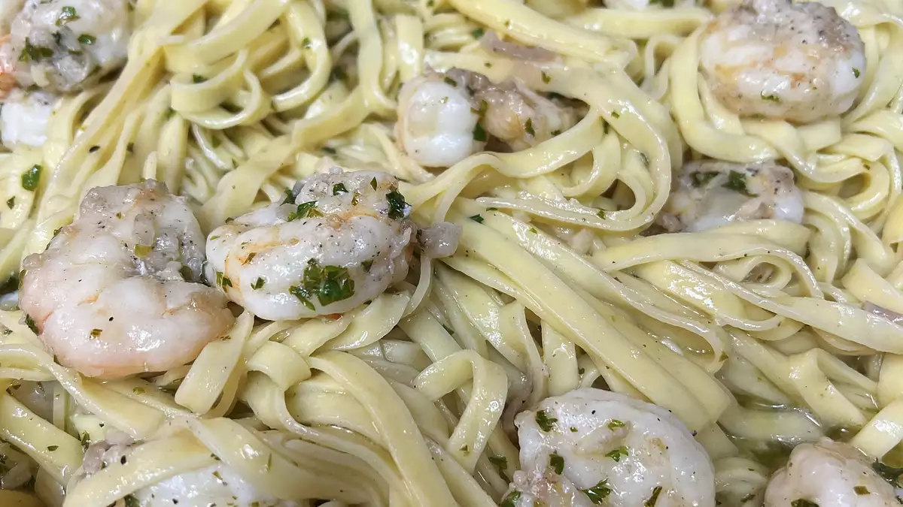

Shrimp Scampi with Pasta

Description
Shrimp scampi with pasta is the ultimate seafood pasta dish. Works with any pasta; angel hair is less filling.
Ingredients
- Shrimp
- Pasta
- Butter
- Extra-virgin olive oil
- Shallots and garlic
- White wine
- Lemon juice
- Seasonings
- Parsley
Steps
- Have all of your ingredients prepared and ready to cook before heating your skillet.
- Boil the pasta in well-salted water, drain, and hold aside before cooking the shrimp scampi.
- It takes just a couple of minutes to cook raw shrimp, and if they cook for too long, shrimp turn tough and rubbery.
- Before you drain the pasta, hold aside a half cup of the pasta water to add to the sauce if the finished dish looks a little dry